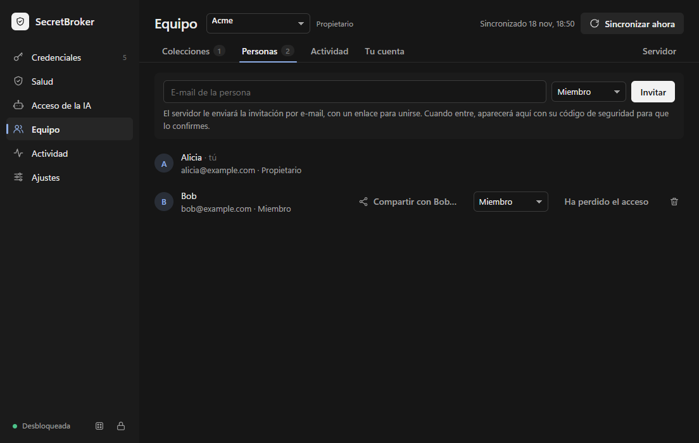
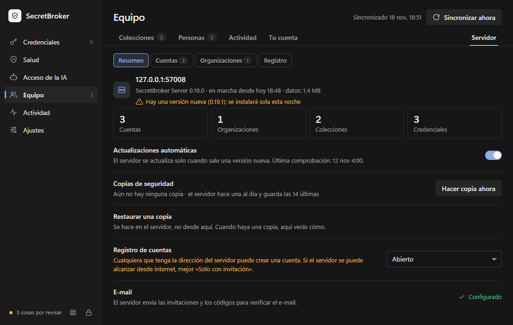

Cómo funcionan los equipos
- Una organización es tu equipo: sus personas y sus colecciones.
- Una colección es una carpeta compartida. Tú eliges quién entra y con qué permiso. También puedes compartir una credencial con una sola persona, sin montar ninguna colección.
- Todo se cifra en tu PC antes de salir. El servidor de equipos lo guarda y lo reparte sin poder leerlo: ni los secretos, ni los nombres de las credenciales, ni los de las colecciones.
- Solo se comparte lo que pones en una colección o le pasas a alguien. El resto de tu bóveda sigue solo en tu PC.
Necesitas un servidor de equipos. Hoy lo pones tú, y el apartado siguiente lo deja en poco. Está previsto un servidor alojado; usará el mismo código, y el servidor propio seguirá teniendo todas las funciones.
Instalar el servidor con un comando
Para un servidor Linux pequeño, alquilado o tuyo, al que entras por SSH. Necesitas un servidor x86-64 con Ubuntu 22.04, 24.04 o 26.04 (con 1 vCPU y 1 GB de RAM sobra), un dominio al que puedas añadir un registro DNS y los puertos 80 y 443 abiertos.
- Apunta un nombre al servidor. En tu proveedor de DNS, añade un registro
A, por ejemplosecretos.ejemplo.com, con la IP pública del servidor. - Abre los puertos 80 y 443 en el cortafuegos de tu proveedor.
- Ejecuta esto en el servidor. Te pregunta el dominio y tu e-mail:
curl -fsSL https://github.com/xBofi/SecretBroker/releases/latest/download/install-server.sh | sudo bash - Abre SecretBroker en tu PC, ve a Equipo › Crear cuenta y usa la dirección del servidor, tu e-mail y el código de un solo uso que ha impreso el instalador. Ese código solo sirve para tu e-mail y te convierte en administrador del servidor.
El comando deja montado HTTPS con un certificado que se renueva solo, una copia de seguridad cada noche (se guardan las 14 últimas) y el servidor como un servicio del sistema bien acotado. Solo instala un archivo cuya firma coincide con la clave de publicación de SecretBroker y, desde entonces, el servidor instala por su cuenta, cada noche, las actualizaciones firmadas; se puede desactivar. Volver a ejecutar el comando repara y actualiza.
Crear tu cuenta y la organización
- En Equipo, elige Crear cuenta. Rellena Servidor (su dirección; aquí también puedes pegar un enlace de invitación), tu e-mail, Tu nombre y una Contraseña de la cuenta de 12 caracteres o más. El Código de invitación se pide si tu servidor lo exige.
- Guarda tu código de recuperación. Se muestra una sola vez: pulsa Copiar, Guardar como archivo o Guardar en mi bóveda personal, y ten una copia fuera de este PC. Si olvidas la contraseña de la cuenta y no te queda ningún PC conectado, es la única forma de volver a entrar sin perder lo que tu equipo comparte contigo.
- Verifica tu e-mail. El servidor te envía un código de 8 cifras. Si el servidor no envía correos, te pide que te verifique quien lo administra.
- Pulsa Crear organización y ponle el nombre de tu equipo o tu empresa.
La contraseña de la cuenta se pide una vez en cada PC. El servidor no la conoce nunca, así que nadie puede recuperarla por ti: para eso está el código de recuperación.
Invitar a personas

- En Equipo › Personas, escribe el E-mail de la persona, elige su rol y pulsa Invitar.
- Si tu servidor envía correos, le llega la invitación con un enlace. Si no, Copiar instrucciones te da un texto para pasárselo por el canal que uséis. El enlace solo rellena su formulario; no lleva ninguna contraseña.
- Esa persona instala SecretBroker, abre el enlace, crea su cuenta y pulsa Aceptar.
- Confírmala. Aparece en Personas con un código de seguridad. Pídele que te lea el suyo, que ve en Equipo › Tu cuenta, por teléfono o en persona, y compáralo. Si no coincide, no la confirmes: alguien podría estar haciéndose pasar por ella.
Comparar el código es lo que impide que nadie, ni el servidor, cuele otra clave. Hasta que no has verificado a alguien en tu PC, no se comparte nada con esa persona.
Compartir credenciales
Con una persona
- Abre una credencial y pulsa Compartir. El diálogo se abre en Con una persona.
- Elige Con quién y Su permiso: Editor, Lector o Solo uso.
- Pulsa Compartir con su nombre. Le llega cifrada.

Equipo › Personas › Compartir con… hace lo mismo con varias credenciales a la vez.
En una colección
En Equipo › Colecciones, Crear colección y después elige quién entra y con qué permiso. A partir de ahí, Compartir › En una colección en cualquier credencial la pone allí.
Una credencial se comparte entera: la clave, las notas y adónde puede ir. Cuándo pide aprobación la IA lo decide cada uno en su PC. Si después un compañero cambia adónde puede ir una clave compartida, o reescribe la descripción que lee tu IA, el cambio espera en tu PC hasta que pulses Revisar y lo aceptes.
Permisos
| Permiso | Verla y copiarla | Que la usen su IA y sus programas | Cambiarla y rotar su clave | Añadir y quitar personas |
|---|---|---|---|---|
| Gestor | Sí | Sí | Sí | Sí |
| Editor | Sí | Sí | Sí | No |
| Lector | Sí | Sí | No | No |
| Solo uso | No | Sí | No | No |
En la organización, cada persona es Propietario, Administrador o Miembro. Los propietarios siempre pueden recuperar una colección, y la app te avisa mientras una colección la gestione una sola persona.
Cuando alguien se va
- En Equipo › Personas, usa la papelera junto a su nombre: Quitar de la organización.
- Las colecciones que podía abrir se vuelven a cifrar con claves nuevas, y el servidor deja de servírselas.
- La app lista todas las credenciales que pudo ver: Cambiar lo que pudo ver esa persona. Recórrela con Empezar; cada una abre Rotar con ayuda. Salud muestra la misma lista hasta que esté hecha.
Lo mismo ocurre cuando dejas de compartir algo con una persona: la credencial queda marcada con «Cambiar: la tenía…».
Si alguien pierde el acceso
- Tiene su código de recuperación. En el formulario de entrada, ¿Has olvidado la contraseña? pide el e-mail, el código de recuperación y una contraseña nueva. Todo lo que tenía compartido vuelve.
- Aún tiene un PC conectado. Equipo › Tu cuenta y, en la contraseña de la cuenta, La he olvidado: pone una nueva sin la anterior.
- Ni lo uno ni lo otro. Un administrador abre Ha perdido el acceso junto a su nombre en Personas y elige Quitar e invitar de nuevo. Su cuenta anterior se quita como cualquier otra, y vuelve con una nueva cuando demuestra que el e-mail es suyo. Después, el administrador le da acceso otra vez a sus colecciones.
Administrar el servidor desde la app
Quien administra el servidor ve una pestaña Servidor en Equipo. Sustituye a la terminal para casi todo.

- Resumen: la versión del servidor y si está al día, las Actualizaciones automáticas, las Copias de seguridad con Hacer copia ahora, y el Registro de cuentas: Abierto, Solo con invitación o Cerrado. Con invitación, Crear código de registro te da un código de un solo uso para pasárselo a alguien.
- Cuentas: verificar un e-mail, Desactivar una cuenta (un portátil perdido, alguien que se fue de malas maneras) o borrarla.
- Organizaciones: de quién es cada una, y cambiar su propietario.
- Registro: lo que se ha hecho con las cuentas y los ajustes.
Restaurar una copia se queda en el servidor a propósito, porque devuelve a todo el equipo a un momento anterior. La app te muestra los comandos exactos.
Qué ve el servidor
No ve nunca contraseñas, claves, nombres de credenciales, notas, nombres de colecciones ni la contraseña de tu cuenta.
Sí ve los correos y los nombres visibles, los nombres de las organizaciones, quién pertenece a qué y con qué permiso, cuántos elementos hay, su tamaño y cuándo cambiaron. Si el servidor quedara totalmente comprometido, eso es lo que sabría el atacante. También podría negarse a atenderte o borrar lo que guarda el servidor, pero no falsificar un miembro, un cambio ni un borrado: van firmados por quien los hizo, y tu app lo comprueba.
La página de seguridad y el modelo de amenazas (en inglés) entran en más detalle.
Última actualización: 18 de noviembre de 2026